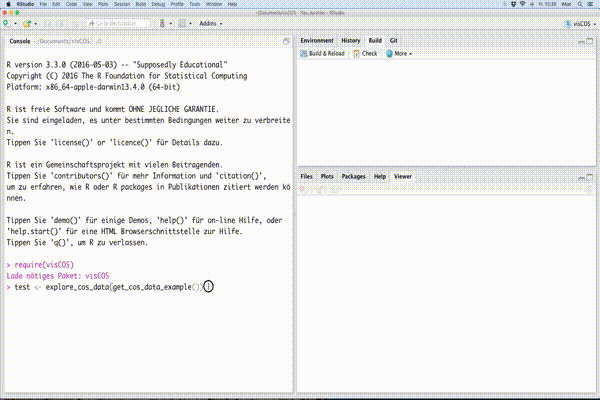

Chapter 9 Runoff Comparison with Objective Functions

9.1 Code
In the following paragraphs the code of the shiny app is defined. The computations of the app are defined in the server part and the appearance in the ui.
# --------------------------------------------------------------------------
#' Explore with Objective Functions
#'
#' Runs a Shiny Gadget which can be used to get an overview of a cos_data time
#' series object.
#'
#'
#' @import shiny
#' @import miniUI
#' @importFrom xts
#' @import dplyr
#' @import magrittr
#' @import dygraphs
#' @import hydroGOF
#' @import pasta
#' @importFrom purrr map_df
#'
#' @export
#'
#' @examples
#' # get example data,
#' # explore the model performance
#' cos_data <- get_viscos_example()
#' explore_cos_data(cos_data)
of_compare <- function(d1,
d2 = NULL,
of_list = list(
nse = of_nse,
kge = of_kge,
p_bias = of_p_bias,
r = of_cor
),
start_date = NULL,
end_date = NULL) {
# (I) pre-sets: ============================================================
if(!is.list(of_list)){
of_list = list(of_list)
}
if (is.null(d2)) {
d2 <- d1
}
if (is.null(names(of_list))){
names(of_list) <- paste("of", 1:length(of_list), sep = "_")
}
clean_data1 <- d1 %>%
remove_leading_zeros(.) %>%
complete_dates(.)
clean_data2 <- d2 %>%
remove_leading_zeros(.) %>%
complete_dates(.)
# convenience variables: ===================================================
name_o <- visCOS::viscos_options("name_o")
name_s <- visCOS::viscos_options("name_s")
color_o <- visCOS::viscos_options("color_o")
color_s <- visCOS::viscos_options("color_s")
ylab <- visCOS::viscos_options("data_unit")
#
name_lb <- visCOS::viscos_options("name_lb")
name_ub <-visCOS::viscos_options("name_ub")
names_d1 <- names(clean_data1) %>% tolower(.)
names_d2 <- names(clean_data2) %>% tolower(.)
#
idx_names_d1 <- grepl(name_o, names_d1, ignore.case = TRUE)
d_nums <- names_d1 %>%
.[idx_names_d1] %>%
gsub("\\D","",.) %>%
as.integer(.) %>%
unique(.)
idx_names_d2 <- grepl(name_o, names_d2, ignore.case = TRUE)
d_nums <- names_d2 %>%
.[idx_names_d2] %>%
gsub("\\D","",.) %>%
as.integer(.) %>%
unique(.)
# check for potential bounds: ==============================================
check_for_bounds <- function(names_data) {
number_lb <- grepl(name_lb,
names_data,
ignore.case = TRUE) %>%
sum(.)
number_ub <- grepl(name_ub,
names_data,
ignore.case = TRUE) %>%
sum(.)
#
plot_bounds <- FALSE
if( (number_lb > 0) & (number_ub > 0)) {
number_obs <- grepl(viscos_options("name_o"),
names_d1,
ignore.case = TRUE) %>%
sum(.)
number_sim <- grepl(viscos_options("name_s"),
names_d1,
ignore.case = TRUE) %>%
sum(.)
if (number_lb != number_ub) {
stop("number of available bounds is not the same!" %&&%
"#lb=" %&% number_lb %&&%
"#ub=" %&% number_ub)
} else if ((number_lb != number_obs) | (number_lb != number_sim)) {
stop("Number of bounds is not the same as the o/s data!" %&&%
"#bounds=" %&% number_lb %&&%
"#obs=" %&% number_obs %&&%
"#sim=" %&% number_sim)
} else {
plot_bounds <- TRUE # switch: plot bounds
}
}
return(plot_bounds)
}
plot_bounds_d1 <- check_for_bounds(names_d1)
plot_bounds_d2 <- check_for_bounds(names_d2)
# app functions: ===========================================================
# subselect data: ##########################################################
subselect <- function(cos_data,
basin_number,
plot_bounds) {
unique_data_names <- names(cos_data) %>%
tolower(.) %>%
gsub("\\d", "", .) %>%
unique(.)
x_string <- unique_data_names[ grep(name_o, unique_data_names) ]
y_string <- unique_data_names[ grep(name_s, unique_data_names) ]
x_sel<- x_string %&% basin_number %&% "$"
y_sel <- y_string %&% basin_number %&% "$"
if(plot_bounds) {
lb_string <- unique_data_names[ grep(name_lb, unique_data_names) ]
ub_string <- unique_data_names[ grep(name_ub, unique_data_names) ]
lb_sel <- lb_string %&% basin_number %&% "$"
ub_sel <- ub_string %&% basin_number %&% "$"
selected_data <- cos_data %>%
select(x = matches( x_sel ),
y = matches( y_sel),
lb = matches( lb_sel ),
ub = matches( ub_sel))
} else {
selected_data <- cos_data %>%
select(x = matches( x_sel ), y = matches( y_sel ))
}
selected_data %<>%
xts(.,order.by = cos_data[[viscos_options("name_COSposix")]])
}
# plotting: ################################################################
create_dygraph <- function(plot_data, plot_group,plot_bounds){
if(plot_bounds) {
base_graph <- dygraph(plot_data, group = plot_group) %>%
dyAxis("y", label = ylab) %>%
dySeries("x", label = name_o, color = color_o) %>%
dySeries("y", label = name_s, color = color_s) %>%
dySeries("lb", label = name_lb, color = "grey80") %>%
dySeries("ub",label = name_ub,color = "grey80")
} else {
base_graph <- dygraph(plot_data, group = plot_group) %>%
dyAxis("y", label = ylab) %>%
dySeries("x", label = name_o, color = color_o) %>%
dySeries("y", label = name_s, color = color_s)
}
} # (V) Define App: ==========================================================
server <- function(input, output, session) {
xts_selected_data1 <- reactive({
subselect(clean_data1, input$basin_num, plot_bounds_d1)
})
xts_selected_data2 <- reactive({
subselect(clean_data2, input$basin_num2, plot_bounds_d2)
})
# (d) create plots:
upper_graph <- reactive({
create_dygraph(xts_selected_data1(), "test", plot_bounds_d1)
})
lower_graph <- reactive({
create_dygraph(xts_selected_data2(), "test", plot_bounds_d1)
})
output$hydrographs <- renderDygraph({
upper_graph() %>%
dyOptions(includeZero = TRUE,
retainDateWindow = TRUE,
animatedZooms = TRUE)
})
output$hydrographs2 <- renderDygraph({
lower_graph() %>%
dyRangeSelector(height = 20, strokeColor = "") %>%
dyOptions(includeZero = TRUE,
retainDateWindow = TRUE,
animatedZooms = TRUE)
})
# (e) get dygraph date bounds (switches):
selcted_from <- reactive({
if (!is.null(start_date)) {
start_date
} else if (!is.null(input$hydrographs_date_window)) {
input$hydrographs_date_window[[1]]
}
})
selcted_to <- reactive({
if (!is.null(end_date)) {
end_date
} else if (!is.null(input$hydrographs_date_window)) {
input$hydrographs_date_window[[2]]
}
})
# (f) extract time_window for the stats header:
output$selected_timewindow <- renderText({
if (!is.null(input$hydrographs_date_window))
paste(strftime(selcted_from(), format = "%d %b %Y"),
"-",
strftime(selcted_to(), format = "%d %b %Y"),
sep = " ")
})
# (g) calculate stats:
sub_slc_cos1 <- reactive({
if (!is.null(input$hydrographs_date_window))
xts_selected_data1()[paste(strftime(selcted_from(), format = "%Y-%m-%d-%H-%M"),
strftime(selcted_to(), format = "%Y-%m-%d-%H-%M"),
sep = "/")] })
sub_slc_cos2 <- reactive({
if (!is.null(input$hydrographs_date_window))
xts_selected_data2()[paste(strftime(selcted_from(), format = "%Y-%m-%d-%H-%M"),
strftime(selcted_to(), format = "%Y-%m-%d-%H-%M"),
sep = "/")] })
out_of <- reactive({
if (!is.null(input$hydrographs_date_window)) {
cbind.data.frame(
map_df(of_list, function(of_,x,y) of_(x,y),
x = sub_slc_cos1()$x,
y = sub_slc_cos1()$y ) %>%
set_names("d1" %-% names(.)),
"-" = "-",
map_df(of_list, function(of_,x,y) of_(x,y),
x = sub_slc_cos2()$x,
y = sub_slc_cos2()$y ) %>%
set_names("d2" %-% names(.))
)
} })
output$slctd_OF <- renderTable(out_of())
# (h) exit when user clicks on done:
observeEvent(input$done, {
returnValue <- list(
selected_time = c(strftime(selcted_from(), format = "%Y-%m-%d-%H-%M"),
strftime(selcted_to(), format = "%Y-%m-%d-%H-%M")),
selected_data = data.frame(date = index( sub_slc_cos1() ),
d1 = coredata( sub_slc_cos1() ),
d2 = coredata( sub_slc_cos2() )),
selected_of = out_of()
)
stopApp(returnValue)
})
}The miniUI is quite spartan. There is an miniButtonBlock that allows to select different basin, as as the dygraph output (i.e hydrographs) for the interactive exploration of the \(o\) and \(s\) data. The formatted table (slctd_OF) displays the different objective functions, that can be given to explore_cos_data .
ui <- miniPage(
miniButtonBlock(selectInput("basin_num",
"basin d1:",
choices = d_nums,
selected = 1,
selectize = FALSE,
width = '50%'),
selectInput("basin_num2",
"basin d2:",
choices = d_nums,
selected = 1,
selectize = FALSE,
width = '50%')),
miniContentPanel(
fillCol(
flex = c(4,4,2),
dygraphOutput("hydrographs", width = "100%", height = "100%"),
dygraphOutput("hydrographs2", width = "100%", height = "100%"),
fillCol(
align = "center",
tableOutput("slctd_OF"))
)
),
gadgetTitleBar("test")
) runGadget(ui,server)
}